The scattering invariant (Q*) is a model-independent quantity that can be easily calculated from scattering data. For two phase systems, the scattering invariant, Q*, is defined as the integral of the square of the wave transfer (q) multiplied by the scattering cross section over the full range of q.
Q* is given by the following equation, . This model independent quantity (Q*) is calculated from the scattering data can be used to determine the volume fraction and the specific area of the sample under consideration. These quantities are useful in their own right and can be used in further analysis. With this scattering invariant module users will also be able to determine the consistency of those properties between data. There is no real data defined from zero to infinity, there usually have limited range. Q* is not really computed from zero to infinity. Methods to deal with this limitation will be addressed.
The
scattering invariant is derived as follow:
·
I(q) = I(q)-
background for data without background
·
I(q) = I(q)* scaling factor , I(q) = I(q)*scaling factor
·
where g =q for the pinhole geometry and g =qv(the slit height) for
the slit geometry which can be given in data or as a value.
·
Numerical approach: 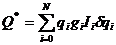 where N = number
of the data points, qi = wave transfer,
Ii = Scattering intensity at qi
, and  qi = (qi+1 – qi-1)/2 (;
note that q0 = (q1- q0)/2 and qN =qN-1 /2).
qi = (qi+1 – qi-1)/2 (;
note that q0 = (q1- q0)/2 and qN =qN-1 /2).
·
Uncertainty:
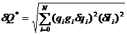 assuming that
there is no correlation between each Ii (uncertainty of I, say dy).
·
Higher q-region (>= qmax
of data):
Porod (w/o
background term) function = C/q4 will be used where the constant C(=2Sv) is to be found by
fitting part of data with the range of qN-m
to qN (m<N).
The
contribution to Q* from this region is described in an explicit
form, and thus numerical integration is not required (w/ no background is
assumed):
§
For pinhole: 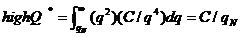,
§
(Also numerical integration can be considered
for this case).
§
For slit smear: 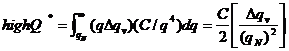 where Dqv is
given in data, qN = maximum q (qmax) in data and C is obtained by the fitting data
in larger q region as described above.
§
Note that the number of points for fitting is to
be given by users and should be larger than 2 from the point of qmax.
·
Lower q-region:
Guinier
function = I0exp(-Rg2q2/3)
where I0 and Rg are obtained by
fitting, similarly to the high q region above.
§
For pinhole:
Numerically 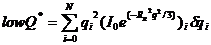 where qN <= qmin
in data points, q0 will be set to 1e-04 (1/A) and N =1000(?, linear binning?).
§
For slit smear: 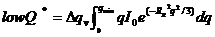
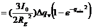 where qmin is the
smallest q value in data points.
(Also
numerical integration can be considered for this case)
where  is the SLD contrast of which value is given by users.
is the SLD contrast of which value is given by users.
Thus, 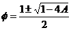 where 0 =< A
=<1/4 in order for these values to be physically valid.
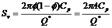 where A and Q* are obtained from 1) and 2), and
the Porod constant Cp is given by users.
Definitions
·
Q : the magnitude of neutron (or X-ray) momentum
transfer vector.
·
I(Q): the scattering intensity as a function of
the momentum transfer Q.
·
the
invariant total is the sum of the
invariant from data’s q range, invariant resulting from extrapolation at
low q range and high q range.
Step1: Load data file.
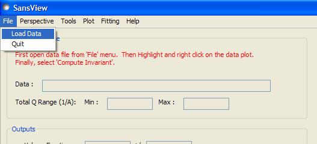
Step2: Select loaded data from a plot panel by highlighting that it until its color turns yellow. Then right click on that the data and selects the option Compute Invariant. The application automatically computes the invariant value if the data loaded is valid.
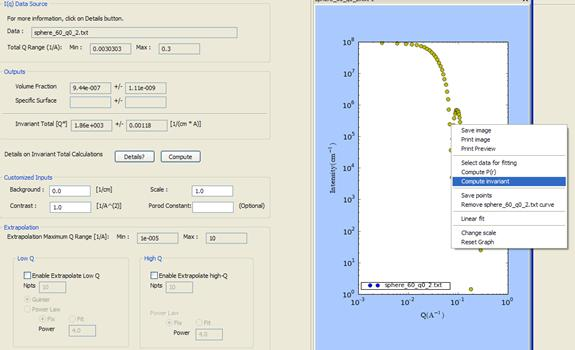
More
options:
To compute the volume, the user must enter a numerical value
for the contrast.
To compute the surface area, the user must enter numerical
values for contrast and Porod constant.
The user can enable extrapolation with check buttons
available and change options necessary for computations.
A detail button is also available to explain how the total value of the invariant is computed.